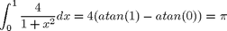
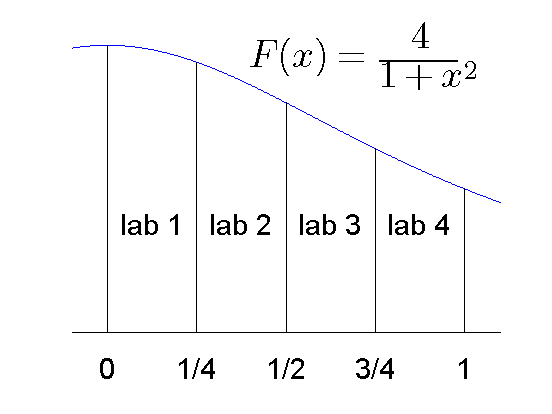

Numerical Estimation of Pi Using Message Passing
This demo shows the basics of working with spmd statements, and how they provide an interactive means of performing parallel computations. We do this by performing relatively simple computations to approximate pi.
Related Documentation:
- spmd reference page in the Parallel Computing Toolbox™ User's Guide
Related Demos:
Contents
The code shown in this demo can be found in this function:
function paralleldemo_quadpi_mpi
Introduction
We intend to use the fact that

to approximate pi by approximating the integral on the left.
We intend to have the MATLAB® pool perform the calculations in parallel, and to use the spmd keyword to mark the parallel blocks of code. We first look at the size of the MATLAB pool that is currently open.
matlabpool size
ans =
4
Parallelize the Computations
We approximate pi by the numerical integral of 4/(1 + x^2) from 0 to 1.
type pctdemo_aux_quadpi.m
function y = pctdemo_aux_quadpi(x) %PCTDEMO_AUX_QUADPI Return data to approximate pi. % Helper function used to approximate pi. This is the derivative % of 4*atan(x). % Copyright 2008 The MathWorks, Inc. y = 4./(1 + x.^2);
We divide the work between the labs by having each lab calculate the integral the function over a subinterval of [0, 1] as shown in the picture.

We define the variables a and b on all the labs, but let their values depend on labindex so that the intervals [a, b] correspond to the subintervals shown in the figure. We then verify that the intervals are correct. Note that the code in the body of the spmd statement is executed in parallel on all the workers in the MATLAB pool.
spmd a = (labindex - 1)/numlabs; b = labindex/numlabs; fprintf('Subinterval: [%-4g, %-4g]\n', a, b); end
1 Subinterval: [0 , 0.25] 2 Subinterval: [0.25, 0.5 ] 3 Subinterval: [0.5 , 0.75] 4 Subinterval: [0.75, 1 ]
We let all the labs now use a MATLAB quadrature method to approximate each integral. They all operate on the same function, but on the different subintervals of [0,1] shown in the figure above.
spmd myIntegral = quadl(@pctdemo_aux_quadpi, a, b); fprintf('Subinterval: [%-4g, %-4g] Integral: %4g\n', ... a, b, myIntegral); end
1 Subinterval: [0 , 0.25] Integral: 0.979915 2 Subinterval: [0.25, 0.5 ] Integral: 0.874676 3 Subinterval: [0.5 , 0.75] Integral: 0.719414 4 Subinterval: [0.75, 1 ] Integral: 0.567588
Add the Results
The labs have all calculated their portions of the integral of the function, and we add the results together to form the entire integral over [0, 1]. We use the gplus function to add myIntegral across all the labs and return the sum on all the labs.
spmd piApprox = gplus(myIntegral); end
Inspect Results in the Client
Since the variable piApprox was assigned to inside an spmd statement, it is accessible on the client as a Composite. Composite objects resemble cell arrays with one element for each lab. Indexing into a Composite brings back the corresponding value from the lab to the client.
approx1 = piApprox{1}; % 1st element holds value on lab 1.
fprintf('pi : %.18f\n', pi);
fprintf('Approximation: %.18f\n', approx1);
fprintf('Error : %g\n', abs(pi - approx1))
pi : 3.141592653589793116 Approximation: 3.141592653589790451 Error : 2.66454e-15